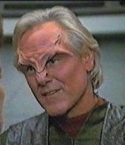

Trabe |
|
||||
|  |
Civiltà tecnologicamente evoluta del quadrante Delta. I Trabe riducono i Kazon
in schiavitù e fanno deliberatamente combattere le sette
kazon tra di loro per poter mantenere meglio
il controllo. Nel 2346 Jal Sankur
unifica le sette kazon contro i loro
oppressori; i Trabe sopravvissuti vagano nello spazio inseguiti dai Kazon
che non permettono loro di stabilirsi su un pianeta.